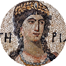

Soteria
Blur and lock the sites you choose. Only your password opens them.
- Nothing ever leaves your device.
- No account. No tracking.
- Works on every site you add.
Create a password
You'll use it to unlock protected sites and to open settings. If you forget it, there is a 24-hour wait before you can set a new one, so choose something you'll remember.
Choose what to protect
Start with a collection or add your own. You can change this any time.
You're all set
Soteria locks your sites whenever you open them.
More tips
Soteria is set up
Manage your sites and options in settings. You'll be asked for your password.